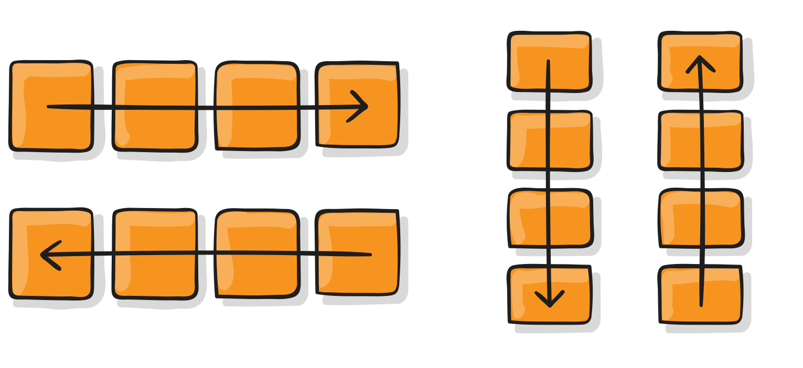
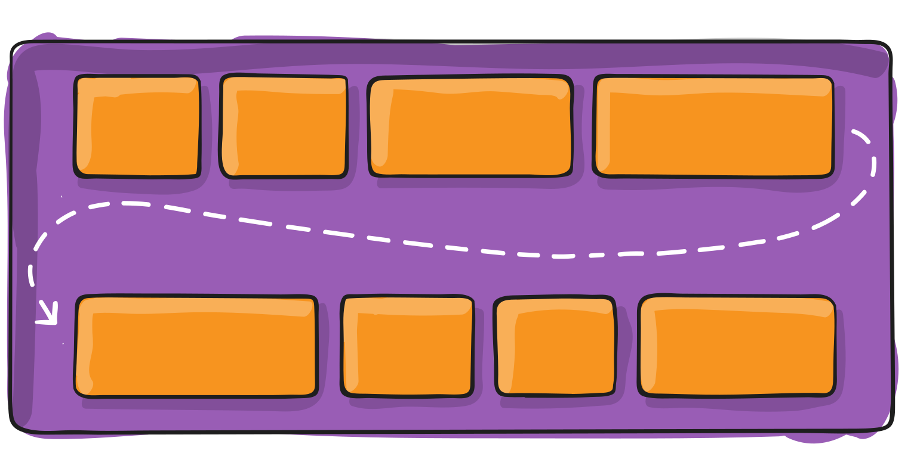
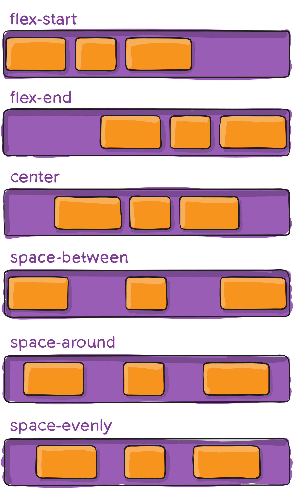
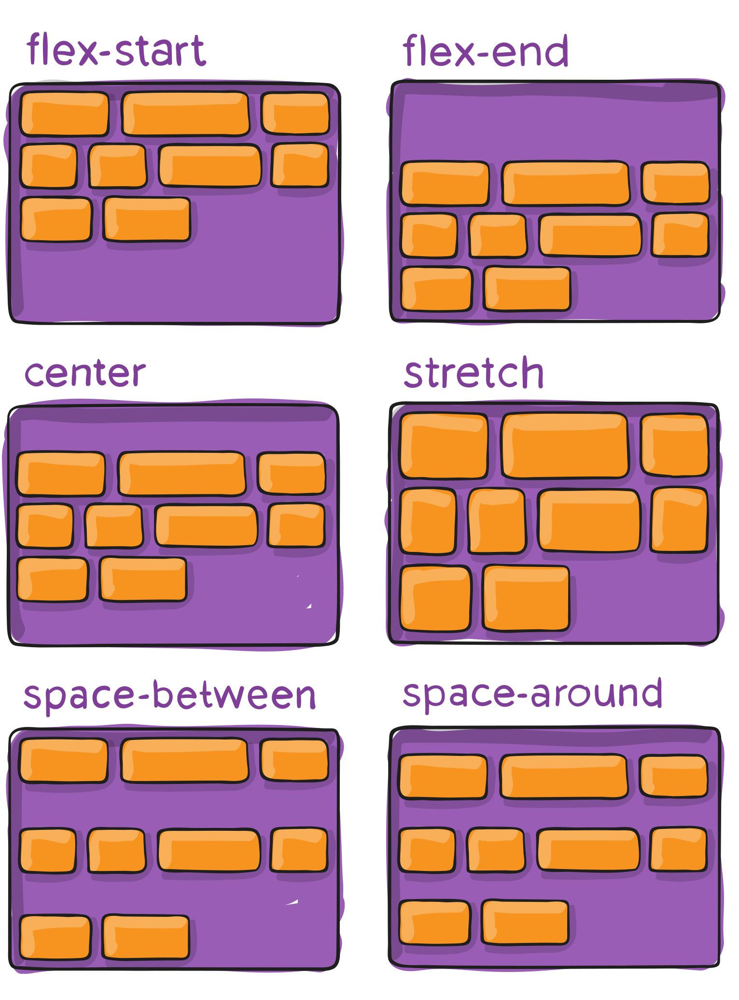

A Completed Guide to FlexBox in CSS (Phần 1)
Hôm nay mình sẽ giới thiệu với các bạn những tính năng cần biết trong Flexbox của CSS. Vì Flexbox có khá nhiều tính năng hay ho nên mình sẽ tách ra ít nhất là 2 phần để có thể giới thiệu một cách đầy đủ !
I, Một vài thuật ngữ
Bởi vì Flexbox là cả một module trong CSS chứ không phải chỉ là một thuộc tính, do đó nó có chứa hàng tá các
thuật ngữ riêng, ta hãy tìm hiểu qua một chút trước khi đi vào các tính năng của Flexbox nhé.
Nếu như với layout bình thường của CSS, việc hiển thị của các elements sẽ được dựa trên block và inline flow
directions, thì trong flex layout chúng ta sử dụng "flex-flow directions". Các bạn hãy quan sát ảnh dưới:
Nào hãy cùng giải thích từng khái niệm nhé:
- Flex container: Là một element được cài đặt thuộc tính display: flex /* hoặc inline-flex */. Đây sẽ là môi trường chứa các phần tử khác cần được hiển thị theo Flexbox.
- Flex item: Các phần tử con của container được gọi là item, ở item bạn có thể thiết lập nó sẽ sử dụng bao nhiêu cột trong một container, hoặc thiết lập thứ tự hiển thị của nó.
Đó là hai khái niệm chính, bây giờ chúng ta sẽ xem qua một vài khái niệm khác nhé:
- main axis- Đây là trục mà các item sẽ hiển thị khi nằm trong container. Nó không nhất thiết phải theo chiều ngang như trên hình vẽ (đấy chỉ là mình lấy ví dụ thế), chúng ta có thể thay đổi được hướng của main-axis.
- main-start | main-end- Đây là 2 điểm bắt đầu và kết thúc của trục main.
- main size - Bạn có thể hiểu đơn giản là kích thước (chiều rộng hoặc dọc) của mỗi item dựa theo trục main axis.
- cross axis - Đây là chiều vuông góc với trục main, direction của nó phụ thuộc hoàn toàn vào việc bạn cài đặt direction của trục main như thế nào.
- cross-start | cross-end- Đây là 2 điểm bắt đầu và kết thúc của trục cross.
- cross size - Kích thước (chiều rộng hoặc dọc) của mỗi item dựa theo trục cross.
II, Các thuộc tính dành cho flex container
1, display
Đây đơn giản là thuộc tính display trong CSS thôi. Cũng như Block, Inline hay Inline-block, ta tạo ra một flex container bằng cách thiết lập cho 1 element thuộc tính này có giá trị như sau:
.container {
display: flex; /* or inline-flex */ }
2, flex-direction
Đây chính là thuộc tính sẽ giúp điều chỉnh hướng của main-axis (cũng chính là hướng mà các item sẽ hiển thị). Flexbox là một single-direction layout concept, vậy nên các item sẽ chỉ được hiển thị theo 1 trong 2 kiểu đó là ngang hoặc dọc.
.container {
flex-direction: row | row-reverse | column | column-reverse;
}
row (kiểu mặc định):Các item được sắp xếp theo chiều ngang, từ trái sang phải.row-reverse :Các item được sắp xếp theo chiều ngang, từ phải sang trái.column :Các item được sắp xếp theo chiều dọc, từ trên xuống dưới.column-reverse :Các item được sắp xếp theo chiều dọc, từ dưới lên trên.
3, flex-wrap
.container{
flex-wrap: nowrap | wrap | wrap-reverse;
}
nowrap (default):Các flex item sẽ luôn nằm trên 1 dòngwrap:Các flex item sẽ nằm trên nhiều dòng, từ trên xuống dướiwrap-reverse:Các flex item sẽ nằm trên nhiều dòng, từ dưới lên trên
4, justify-content
Đây là cách mà các item sắp xếp cách hiển thị trong container.
.container {
justify-content: flex-start | flex-end | center | space-between | space-around | space-evenly;
}
flex-start (default):Các item được "căn lề trái"flex-end:Các item được "căn lề phải"center:Các item được "căn giữa"space-between:Các item được phân phối khoảng cách ngang nhau trên dòng. Item đầu tiên được gắn chặt vào main start và item cuối cùng được gắn chặt vào main endspace-around:Tương tự như space-between tuy nhiên item đầu tiên và cuối cùng "cách lề" một khoảng bằng nửa khoảng cách giữa các itemspace-evenly:Tương tự như space-around tuy nhiên item đầu tiên và cuối cùng "cách lề" một khoảng bằng khoảng cách giữa các item
5, align-items

Có thể coi đây là justify-content phiên bản dành cho cross-axis.
.container {
align-items: stretch | flex-start | flex-end | center | baseline;
}
stretch (default): Các item sẽ co giãn để "fill" đầy container (vẫn tuân theo max-width/min-width)flex-start: Có thể coi là "căn lề trên"flex-end: Đây là "căn lề dưới"center: Các item nằm giữa containerbaseline: Các item được sắp xếp theo baseline của chúng.
6, align-content
Nếu như align-items là justify-content phiên bản cross-axis dành cho các item nằm
trên 1 dòng, thì align-content là phiên bản dành cho các dòng.
.container {
align-content: flex-start | flex-end | center | space-between | space-around | stretch;
}
flex-start: Các dòng được "căn lề trên"flex-end: Các dòng được "căn lề dưới"center: Các dòng được "căn giữa"space-between: Tương tự phần justify-content nhưng theo trục crossspace-around: Như trênstretch (default): Các dòng được kéo giãn để fill đầy các khoảng trống
III, Tạm kết
Trong bài này ta đã đi qua được các thuộc tính cần thiết dành cho flex container, bài sau chúng ta sẽ cùng tìm hiểu về các thuộc tính dành cho flex item nhé !